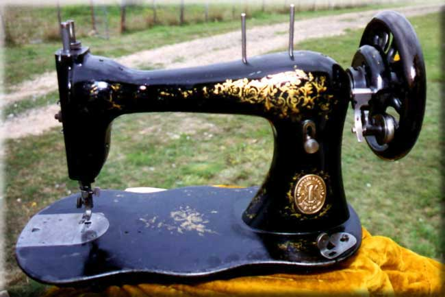

This is another example of the Singer 'Improved Family' oscillating shuttle machine which was produced between 1879 and the early 1890's. This one was made in Singer's British plant at Kilbowie, near Glasgow in Scotland in 1887.
The large Singer logo cast into the underside of the base can be seen in Detail of Underside below.
